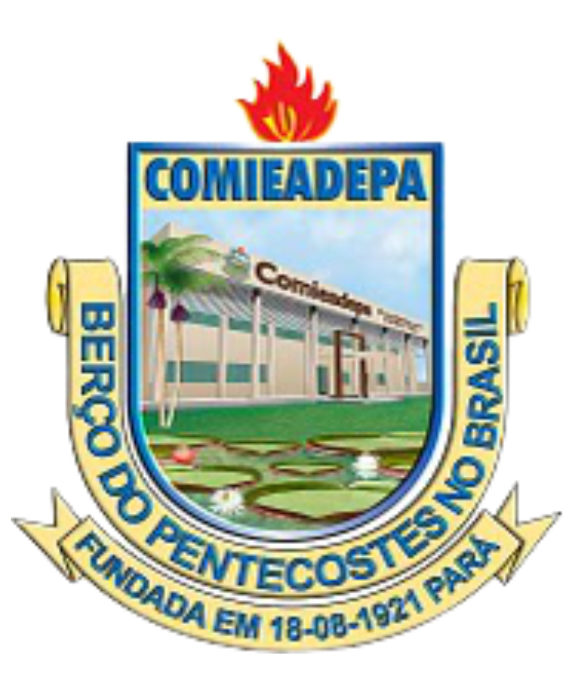
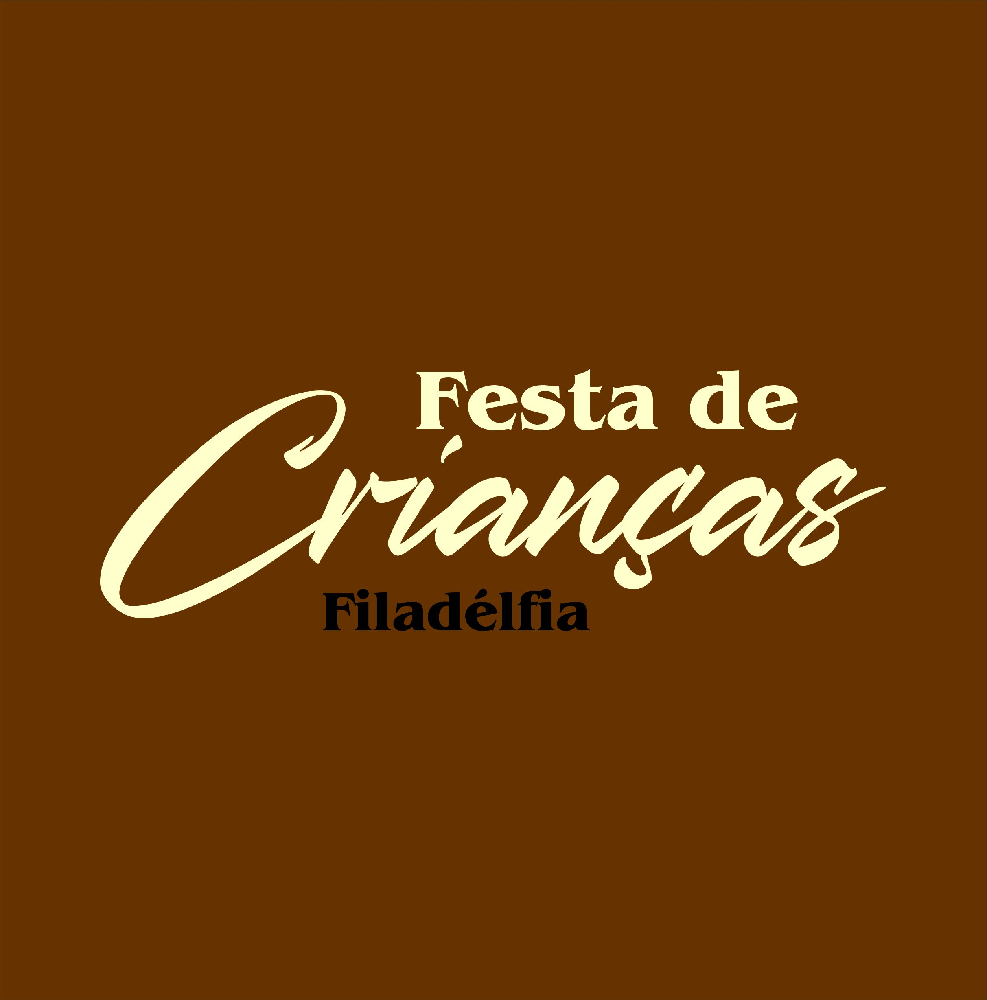
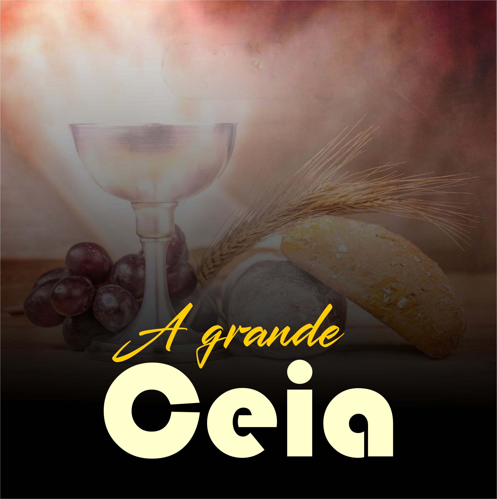

Agenda de Eventos da Igreja
Outubro 2024
Culto de Arrecadação | Congregação Nova Galileia
Programação para levantar recursos para finalizar a obra para Inauguração
Data: 19 de Outubro Local: Congregação Nova Galileia - Rio Aningau
41 Anos da Congregação e Inauguração da Casa Pastoral e Refeitório
Festa de Inauguração e Aniversário da Congregação
Data: 26 e 27 de Outubro Local: Congregação Nova Jerusalém - Rio PanacalhauNovembro 2024

110 Anos da Assembleia de Deus em Afuá
Aniversário da Igreja com a presença de Vários Campos da Supervisão
Data: 10 de Novembro Local: Igreja CentralCongresso de Obreiros
Festa de Obreiros na Congregação Monte Sinai
Data: 16 de Novembro Local: Congregação Monte Sinai, Bairro do Capim MarinhoCongresso Unificado
Festa dos Departamentos de Criança, Jovens, Círculo de Oração e Obreiros
Data: 24 e 25 de Novembro Local: Congregação Maranata, Bairro do Capim Marinho

Festa de Crianças
Congresso Infaltil na Congregação
Data: 30 de Novembro Local: Congregação Filadélfia, Rio CajaryDezembro 2024
Congresso DIADAF
Festa Geral do Departamento Infantil
Data: 06 e 07 de Dezembro Local: Templo CentralInauguração da Congregação Nova Galileia
Cerimônia de Inauguração da Casa de Oração
Data: 14 de Dezembro Local: Congregação Nova Galileia, Rio Aningau

Culto da Virada
A grande Ceia e Culto Administrativo
Data: 31 de Dezembro Local: Templo Central